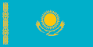

Qazaxıstan (qazax. Қазақстан/Qazaqstan; rus. Казахстан) və ya rəsmi adı ilə Qazaxıstan Respublikası (qazax. Қазақстан Республикасы/Qazaqstan Respublikasy; rus. Республика Казахстан) — Mərkəzi Asiyada ərazisinə görə ən böyük dövlət. Qazaxıstan sahəsinin böyüklüyünə görə dünyada doqquzuncu yerdə, dənizə çıxışı olmayan ölkələr arasında isə ilk pillədədir.[6] Ümumi sahəsi 2,724,900 km² olan Qazaxıstan şimalda Rusiya, şərqdə Çin, cənubda Türkmənistan, Özbəkistan və Qırğızıstanla həmsərhəddir. Ölkənin qərbində isə Xəzər dənizi yerləşir və bu dəniz vasitəsilə Rusiya, Azərbaycan, İran və Türkmənistanla su sərhədinə malikdir. Qazaxıstanın paytaxtı 1997-ci ildən bəri Astana şəhəridir. Həmin vaxta qədər ölkənin paytaxtı ən böyük şəhər olan Almatı şəhəri olmuşdur. Qazaxıstan iqtisadi cəhətdən Mərkəzi Asiya regionunda dominant dövlət hesab olunur. Belə ki, regionun ÜDM-nin 60 faizi Qazaxıstana məxsusdur. Ölkənin əsas gəlir mənbəyini neft-qaz sənayesi təşkil edir. Ölkə həmçinin böyük mineral resurslara sahibdir.
Qazaxıstan rəsmi olaraq müxtəlif mədəniyyətlərə ev sahibliyi edən demokratik, dünyəvi, unitar, konstitusiyalı respublikadır.[7] Ərazisi düzənlik, çöl, tayqa, kanyon, dağlar və səhralardan ibarətdir. 2020-ci il 1 avqusta olan məlumata əsasən əhalisinin sayı 18,8 milyon nəfərdən çoxdur.[8] Quru ərazisinin çox böyük olmasına baxmayaraq, əhali sıxlığına görə dünyada ən aşağı göstəricilərdən birinə sahibdir. Hər kvadrat kilometrdə əhali sıxlığı 6 nəfərə bərabərdir.
Qazaxıstan ərazisi tarix boyunca köçəri türk xalqlarına ev sahibliyi etmişdir. 13-cü əsrdə bu ərazi Çingiz xanın rəhbərlik etdiyi Monqol İmperiyası tərəfindən işğal olunmuşdur. 16-cı əsrdən etibarən qazaxlar ayrıca qrup kimi ortaya çıxdıqdan sonra onların yaşadığı ərazilər üç cüzə bölündü. 18-ci əsrdə ruslar Qazaxıstan ərazisində məskunlaşmağa başladı və 19-cu əsrin ortalarından etibarən bu ərazi Rusiya imperiyası tərəfindən idarə olunmağa başlandı. Rusiyada 1917-ci ildə baş tutmuş inqilab və onun ardınca baş vermiş Rusiya vətəndaş müharibəsi nəticəsində imperiyaya tabe olan digər bütün dövlətlər müstəqillik əldə etdi. Lakin bu müstəqillik uzun çəkmədi. 1920-ci ildə ölkə ərazisi yenə rusların işğalına məruz qaldı və Sovet hakimiyyəti bərqərar oldu. 1936-cı ildə Sovet İttifaqının tərkib hissəsi olan Qazaxıstan SSR-in əsası qoyuldu.
Qazaxıstan 1991-ci ildə Sovet İttifaqının dağılması zamanı ən son müstəqillik elan edən Sovet respublikalarından biri olmuşdur. Hazırkı prezident Qasım-Comərd Tokayev 2019-cu ildən bəri ölkəyə rəhbərlik edir. Qazaxıstan hal-hazırda öz iqtisadiyyatını, xüsusilə də karbohidrogen sənayesini inkişaf etdirməkdə davam edir.[9]
Qazaxıstanda qazaxlar (əhalinin 63%-ni təşkil edir), ruslar, özbəklər, ukraynalılar, almanlar, tatarlar və uyğurlar da daxil olmaqla 131 müxtəlif etnik qrup yaşayır.[10] Əhalinin təqribən 70%-i müsəlmanlardan, 26%-i isə xristianlardan ibarətdir.[11] Ölkənin rəsmi dili qazax dili olsa da, inzibati işlər də daxil olmaqla, bütün səviyyələrdə rus dili də bərabər statusa sahibdir. Qazaxıstan hal-hazırda BMT, Dünya Ticarət Təşkilatı, MDB, Şanxay Əməkdaşlıq Təşkilatı, Avrasiya İqtisadi Birliyi, KTMT, ATƏT, İslam Əməkdaşlıq Təşkilatı və TÜRKSOY kimi təşkilatların üzvüdür.Qazaxlar türklərin qıpçaq qolunun ən böyük xalqıdır. Qazax adına keçmişdən qazaxlarla əlaqə quran yazı mədəniyyətinə sahib məmləkətlərin yazılı qaynaqlarında rast gəlmək mümkündür. Bunlar; çin, rus, ərəb, fars, bizans, moğul və türk dillərində yazılan əsərlərdir. Bu əsərlərin dil xüsusiyyətlərinə görə "qazax" adı, Asa, Kasa, Hasa, Haysak, Kasok, Qasaq, Hasıq, Kazak, Kazsak və s. müxtəlif şəkillərlə yazılmışdır. Qazax adının nə zaman meydana çıxdığı tam olaraq bilinmir. Çünki "qazax" kəlməsinin etimologiyası tarixin dərinliklərinə gedir. Qazaxlar haqqında tarixçilər müxtəlif dəlillər gətirirlər. Məsələn; Akademik Marr: "Qafqazda qazaxlar yaşayırlar", çex tarixçisi Grozniy: "Qazaxlar eramızdan əvvəl Xəzər dənizinin şərq bölgəsində yaşayan hunların nəvələri və Qafqaz Kaspin sözlərinin qaz, qas kökündən törəmiş olduğu, qazax adının da bu kökdən qaynaqlandığını bildirir".
Müasir Qazaxıstanın kökləri 1400-cü illərə qədər getməkdədir. 1400-cü illərdə müxtəlif türk tayfalarının birləşməsi ilə Mərkəzi Asiyada yeni bir boy yaranmışdır. Qızıl Orda dövləti dağıldıqdan sonra türk tayfaları Noqay xan ətrafında birləşərək Noqay Xanlığını qurdular. Bu xanlıq sonradan Qazax xanlığına çevrildi. Qazax xanlığı üç hissədən ibarət idi: Ulu juz, Kiçik juz və Orta juz. 1771-ci ildən etibarən onlar bir-birindən asılı olmayan siyasət yeritməyə başladılar. 1770-ci ilin sonlarında qazax juzları Rusiya və Çin arasında mübarizə meydanına çevrildi. Bu mübarizə rusların qələbəsi ilə başa çatdı. Bundan sonra ruslar işğal etdikləri qazaxların ölkəsində müstəmləkəçilik siyasəti yeritməyə başladılar. Bu torpaqların bütün imkanlarını mənimsədilər. Yerli qazaxları köçə məcbur etdilər. Qazaxların dilinə, dininə və yaşayışına müxtəlif qadağalar qoyulmuşdur.
Aclıq və siyasi səbəblərlə 1912–17 ci illər arasında rus hökumətinə qarşı etiraz başladı. 1917-ci ildə Rusiyada çarlığın devrilməsi ilə əlaqədar olaraq Mərkəzi Asiya bir müddət müstəqil oldu. 1917–20 ci illər arasında keçmiş qazax juzları birləşərək "Alaş Orda" dövlətini qurdular. Bu dövlət üç il yaşaya bildi. 1920-ci ildən sonra ruslar hakimiyyəti ələ keçirdilər və bu tarixdən sonra SSRİ dövrü başladı. Rus hökuməti qazaxların milli şüurunu itirməsi üçün müxtəlif yollara əl atdı. Stalinin vaxtında qazaxcadan ərəb və farsca sözlər çıxarılaraq bunların yerinə rusca kəlmələr qoyuldu. Günümüzdə də qazaxcada olan bəzi kəlmələr üçün rus sözləri işlədilir. Sovet hakimiyyəti altında olan dövrdə 1933-cü ildə süni aclıq, 1937–38-ci illərdə soyqırım, 1954-cü ildə 6 milyon 300 min hektar yerin zorla rus mühacirlərinə paylanması, 1960-cı illərə qədər rus köçləri yerləşdirmə planlarının həyata keçirilməsi, 1986-cı ildə məşhur "Celtoksan" hadisəsini söyləmək mümkündür.
İkinci Dünya müharibəsindən sonrakı illərdə Qazaxıstan SSR-nin xalq təsərrüfatının bərpasında fəal iştirak etmişdir. 50–60-cı illərdə Qazaxıstanda 900-dən çox iri sənaye müəssisəsi və sexi tikilib işə salındı. Ust-Kamenoqorsk titan-maqnezium kombinatının, Pavlodar alüminium və alüminium oksidi zavodunun, Şərqi Qazaxıstanda sink zavodunun, Turqay boksit mədənlərinin yaradılması, mövcud əlvan metallurgiya müəssisələrinin yenidən qurulması və genişləndirilməsi ölkədə əlvan metal istehsalında Qazaxıstanın rolunu daha da artırdı. Karaqanda metallurgiya kombinatı tikildikdən sonra Qazaxıstan qara metallurgiyanın da mühüm bazasına çevrildi. Turqay düzündəki nadir dəmir filizi yatağı əsasında ildə 26,5 milyon ton filiz verən Sokolovo-Sarbay filizsaflaşdırma kombinatı yaradıldı. Bu kombinat Cənubi Ural və Qazaxıstan qara metallurgiya sənayesinin əsas xammal bazasına çevrildi. Karaqanda və Ekibastuz kömür hövzələrində yeni şaxtalar tikildi. Respublikada sənaye məhsulu istehsalı 2,1 dəfə artdı.[12]
50–60-cı illərdə Sovet İttifaqında xam və istifadəsiz torpaqların istifadə edilməsi proqramı həyata keçirildi. Qazaxıstanda bu müddətdə 4 milyon hektardan çox xam torpaq əkin üçün yararlı hala gətirilməli idi. Bu məqsədlə respublikaya minlərlə insan köçürüldü. 60–80-ci illərdə Qazaxıstan kommunist partiyasına Dinmuxamed Kunayev rəhbərlik etmişdir. Onun dövründə də respublikada sənayeləşmə davam etdirildi, Alma-Atada, Karaqandada, Ekibastuzda, Pavlodarda iri müəssisələr, energetika obyektləri, dəmir və avtomobil yolları tikildi. Qazaxıstana digər respublikalardan köçürmələr davam etdirilirdi, lakin, Kunayev qazax rəhbər kadrlarının irəli çəkilməsinə kömək edirdi. 50-ci illərin sonunda qazax etnosu Qazaxıstan əhalisinin cəmi 30 faizini təşkil edirdi. 70-ci illərdən başlayaraq Qazaxıstanda yerli əhalinin sayı tədricən artmağa başladı ki, bu da etnik balansın dəyişməsi ilə nəticələndi. Yalnız 1989-cu ildə qazaxlar öz tarixi vətənlərində üstünlük təşkil etməyə başladılar. 1989-cu il SSRİ əhalisinin siyahıya alınmasına görə "ikinci böyük etnik qrup olan ruslar Qazaxıstan əhalisinin 37,8 faizini təşkil etmişlər". Respublikanın yeddi vilayətində isə ümumiyyətlə, rusların sayı qazaxlardan çox olub. SSRİ-nin dağılması və Qazaxıstanın müstəqillik əldə etməsindən sonra, buraya müəyyən səbəblər ucbatından köçürülmüş xalqlar öz ata-baba yurdlarına qayıtmağa başladı ki, bu da etnik mənzərənin köklü formada dəyişilməsinə gətirib çıxardı. Lakin Qazaxıstan yenə də əvvəlki kimi çoxmillətli respublika olaraq qalır.[12]
SSRİ-də yenidənqurma başladıqdan və Qorbaçovun hakimiyyətə gəlişindən sonra Kunayev iqtisadiyyata pis rəhbərlik etdiyinə və korrupsiyaya görə vəzifəsindən uzaqlaşdırıldı. 1986-cı ilin dekabrında onun yerinə Ulyanovsk vilayət partiya komitəsinin rəhbəri Gennadi Kolbin (milliyətcə rus) təyin edildi. Bu təyinata etiraz əlaməti olaraq, minlərlə qazax tələbəsi Alma-Atada mitinq keçirdi. Məsələyə ordunun qarışması ilə minlərlə qazaxın qanı axıdıldı. 200 nəfərdən artıq insan həlak oldu. Bu ruslaşma və sovetləşmə siyasətinə qarşı ilk etiraz aksiyası idi və 1986-cı il sovet tarixinə millətlərarası toqquşma ili kimi daxil oldu. Hələ Qazaxıstan hadisələrindən bir neçə ay əvvəl mart-aprel aylarında Yakutiyada yakut tələbələri ilə rus gəncləri arasında qarşıdurma olmuşdu. G.Kolbin islahatlar aparmağı, qazax dilinin istifadəsini genişləndirəcəyini, hətta onun respublikada rəsmi dil kimi elan olunacağını söz verməklə vəziyyəti sakitləşdirməyə çalışdı. Yaranmış vəziyyətdən ehtiyat edən sovet rəhbərliyi 10 yanvar 1987-ci ildə Qazaxıstan KP MK-nin ikinci katibi vəzifəsinə milliyyətcə qazax olan Səidullah Kubaşovu gətirmək məcburiyyətində qaldı. Hadisələrin bir daha təkrarlanmaması üçün DTK vasitəsilə iştirakçılar təqib olunmağa, həbs edilməyə başlandı. Alma-Ata hadisələri Orta Asiyada milli məsələnin ciddi olduğunu və imperiyaya nifrətin gücləndiyini göstərdi. Qazaxıstanda müstəqil ictimai təşkilatlar meydana gəlməyə başladı. 1989-cu il iyunun 22-də Nursultan Nazarbayev Qazaxıstan KP MK-ın birinci katibi seçildi.[12]
1990-cı ildə iqtisadi böhran və SSRİ-nin süqutundana sonra 1991-ci ildə müstəqil olaraq dünya arenasında öz yerini tapdı. Nursultan Nazarbayev ölkənin ilk prezidenti oldu.
1992-ci ildə Qazaxıstan Rusiyanın təşəbbüsünə əsasən yanvarda Kollektiv Təhlükəsizlik Müqaviləsi imzalamışdır.
1997-ci ildə paytaxt Almatıdan Astanaya keçirilmişdir.
Qazaxıstanın xarici siyasət prioritetləri Rusiya, Çin, ABŞ, Avropa Birliyi, Orta Asiya dövlətləri. Həmçinin dünya ölkələri ilə qarşılıqlı faydalı əməkdaşlığın inkişaf etdirilməsinə yönəlmişdir.
Qeyd: M. V. Lomonosov adına Moskva Dövlət Universitetinin analitik-informasiya mərkəzinin ekspert qrupunun rəhbəri Aleksey Vlasov düşünür ki, Gürcüstan-Osetiya münaqişəsi Qazaxıstanın 2010-cu ildə ATƏT-ə sədrliyi zamanı prioritetlər arasında olmayacaq. Bu gün Gürcüstana aid olan bu məsələlər siyasidir və burda iqtisadi məsələlərdən söhbət gedə bilməz. Anlamaq lazımdır ki, əgər Azərbaycanla Ermənistanın vəziyyətində türk-erməni sərhədlərinin açılması üçün hələdə iqtisadi səbəblər tapmaq olsa da bu Rusiya və ya Türkiyə biznesinin eləcə də erməni diasporunun maraqlarıdır. Gürcüstan ilə əlaqələr isə siyasidir. Burada iqtisadi məntiq işləməyəcək.
İSESKO şurası son iclasında 2015-ci ildə İslam mədəniyyəti şəhəri elan olunması ilə bağlı Almatının namizədliyini təsdiqləyib.